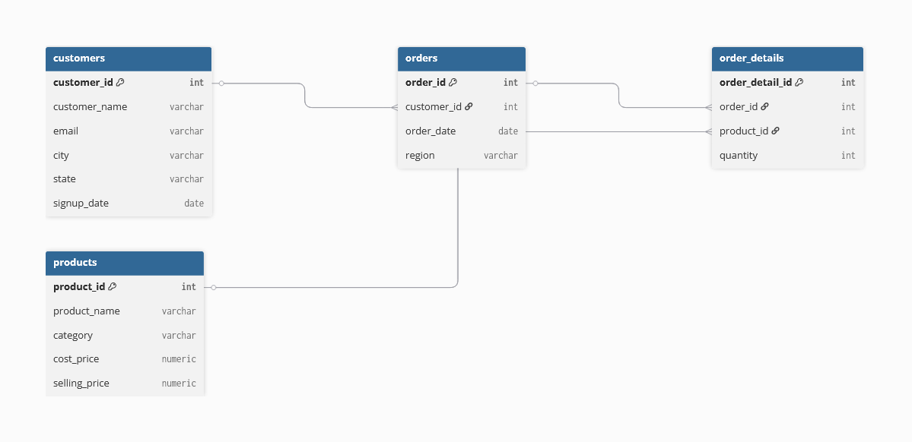
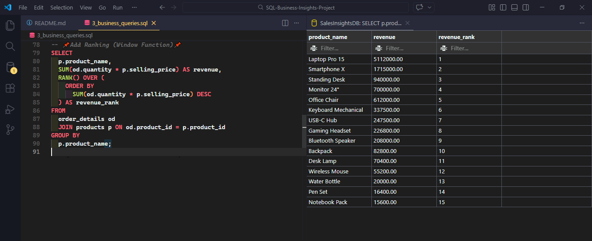
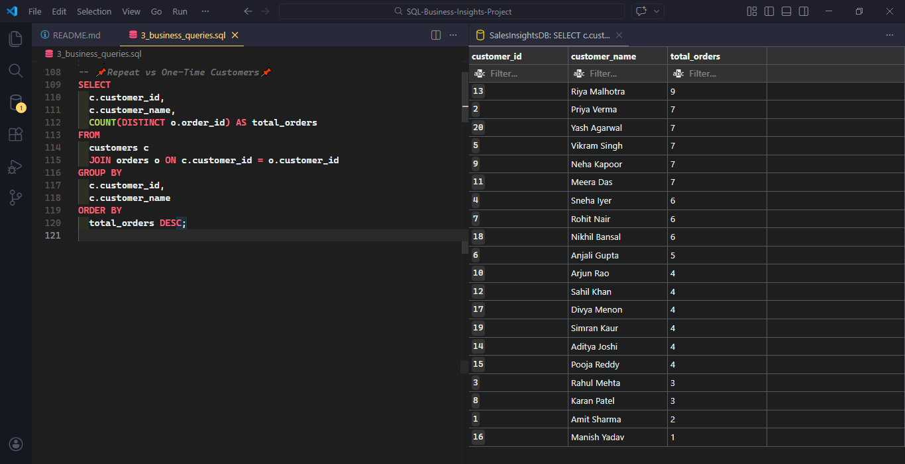
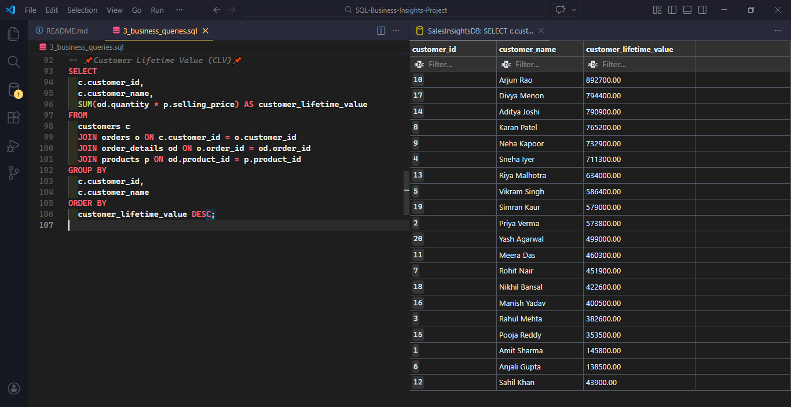
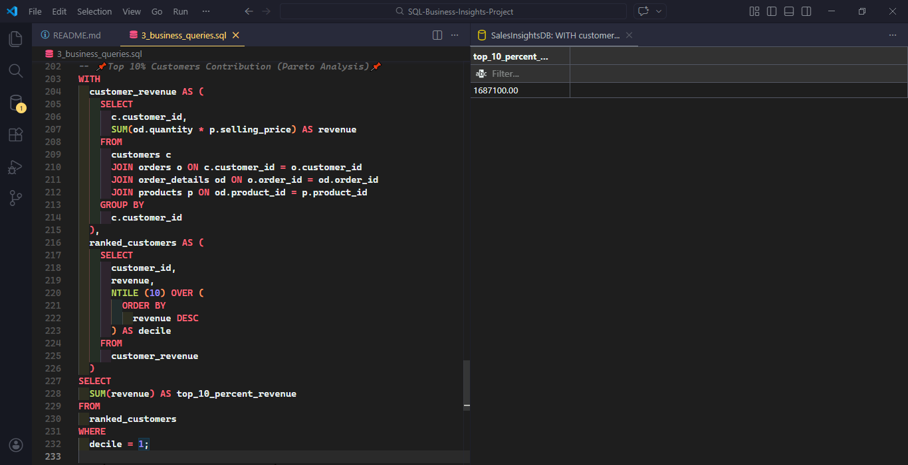

Case Study
SQL Business Insights Analysis
Analyzed transactional sales data using SQL to identify top-performing products, high-value, customers, and revenue concentration patterns.
Project Overview
The goal of this project was to analyze a relational sales dataset to uncover revenue drivers, customer purchasing behavior, and product performance. Using SQL joins, aggregations, and window functions, the analysis identifies high-value customers, top-performing products, and revenue concentration patterns.
Database Structure
The sales dataset is organized into four relational tables. These tables capture customer information, order transactions, product catalog data, and individual order line items.

Customers
Contains transaction-level data including order dates and customer relationships.
Order Details
Capture individual line items within each order including product references and quantity purchased.
Products
Maintains product catalog data including category, cost price, and selling price.
SQL Techniques Used
Joins
Connectedorders, customers, and products tables to reconstruct
complete sales transactions.
Aggregations
Used SUM and COUNT to calculate revenue, order frequency, and customer metrics.
Window Functions
Applied RANK() and NTILE() to analyze product performance and revenue
distribution.
Customer Segmentation
Identified high-value customers using Customer Lifetime Value (CLV) calculations.
SQL Query Examples
Sample SQL queries used to analysis revenue, customers, and performance.
Total Revenue
SELECT
SUM(od.quantity * p.selling_price) AS total_revenue
FROM
order_details od
JOIN products p ON od.product_id = p.product_id;
calculates total revenue generated across all product sales.
Top 5 Revenue Generating Products
SELECT
p.product_name,
SUM(od.quantity * p.selling_price) AS revenue
FROM
order_details od
JOIN products p ON od.product_id = p.product_id
GROUP BY
p.product_name
ORDER BY
revenue DESC
LIMIT
5;
Identifies the highest revenue generating products.
Monthly Revenue Trend
SELECT
DATE_TRUNC ('month', o.order_date) AS month,
SUM(od.quantity * p.selling_price) AS revenue
FROM
orders o
JOIN order_details od ON o.order_id = od.order_id
JOIN products p ON od.product_id = p.product_id
GROUP BY
month
ORDER BY
month;
Tracks revenue growth over time to identify monthly trends.
Customer Lifetime Value (CLV)
SELECT
c.customer_id,
c.customer_name,
SUM(od.quantity * p.selling_price) AS customer_lifetime_value
FROM
customers c
JOIN orders o ON c.customer_id = o.customer_id
JOIN order_details od ON o.order_id = od.order_id
JOIN products p ON od.product_id = p.product_id
GROUP BY
c.customer_id,
c.customer_name
ORDER BY
customer_lifetime_value DESC;
Calculates the lifetime revenue generated by each customer.
Pareto Analysis (Top 10% Customers)
WITH
customer_revenue AS (
SELECT
c.customer_id,
SUM(od.quantity * p.selling_price) AS revenue
FROM
customers c
JOIN orders o ON c.customer_id = o.customer_id
JOIN order_details od ON o.order_id = od.order_id
JOIN products p ON od.product_id = p.product_id
GROUP BY
c.customer_id
),
ranked_customers AS (
SELECT
customer_id,
revenue,
NTILE (10) OVER (
ORDER BY
revenue DESC
) AS decile
FROM
customer_revenue
)
SELECT
SUM(revenue) AS top_10_percent_revenue
FROM
ranked_customers
WHERE
decile = 1;
Identifies the revenue contribution of the top 10% of customers.
SQL Optimization Techniques
Strategies used to improve query performance and ensure efficient data analysis.
Efficient Table Joins
Used normalized relational structure with optimized joins between customers,
orders, order_details, and
products to accurately
compute revenue and customer metrics.
Common Table Expressions (CTEs)
Implemented CTEs to simplify complex calculations such as customer segmentation and revenue contribution analysis, improving query readability and maintainability.
Window Functions
Used RANK(), DENSE_RANK(), and
NTILE() to analyze product performance and perform Pareto analysis for top
revenue-generating customers.
Aggregation Optimization
Used GROUP BY with aggregated metrics to efficiently calculate revenue,
profit, and customer lifetime value across multiple tables.
Key Insights
Total Revenue
Total revenue generated across all transactions within the dataset.
Top Product Revenue
Laptop Pro 15 generated the highest revenue among all products.
Highest Customer CLV
Top customers generated nearly $900K in lifetime purchase value.
Top 10% Customers
A small group of customers contributes a large share of revenue.
Business Recommendations
Insights from the analysis translated into potential business actions.
Focus on High-Value Customers
Pareto analysis shows that a small percentage of customers contribute a large portion of total revenue. Implement loyalty programs and personalized promotions to retain these high-value customers.
Promote Top-Performing Products
Top revenue-generating products drive a significant share of sales. Marketing campaigns and bundled offers could further increase their sales performance.
Encourage Repeat Purchases
Repeat customers contribute more revenue than one-time buyers. Offering discounts, memberships, or rewards programs can help increase customer retention and lifetime value.
Monitor Monthly Sales Trends
Monthly revenue analysis helps indentity seasonal trends and demand patterns. Businesses can adjust inventory planning and marketing strategies accordingly.
Analysis Results

Revenue ranking of products calculated using SQL window functions.

Customer purchase frequency showing repeat buyers.

Customer lifetime value (CLV) calculated from aggregated revenue.

Pareto analysis showing top 10% customers revenue contribution.
Business Impact
Potential Business Value
Revenue Drivers
Identified top-performing products contributing the majority of revenue, enabling businesses to prioritize inventory and marketing strategies around high-performance items.
High Value Customers
Customer lifetime value analysis highlights high-value customers that could benefit from loyalty programs and targeted retention campaigns.
Sales Concentration
Pareto analysis revealed that a small group of customers generate a large share of revenue, emphasizing the importance of customer segmentation strategies.
Data Driven Decisions
The insights derived from SQL analysis provide a foundation for improving product strategy, pricing, and customer engagement.
What I Learned
Advanced SQL Techniques
This project strengthened my understanding of window functions, ranking techniques, and complex aggregations for analytical queries.
Data-to-Insight Thinking
Beyond writing queries, I focused on translating raw data into actionable insights that could inform real business decisions.
Structured Analysis
The project reinforced the importance of braking analysis into stage: data exploration, transformation, aggregation, and insight extraction.
Project Resources
Access the full project files including SQL scripts and dataset.
GitHub Repository
Explore the full project including database schema, data inserts, and advanced SQL queries used in the analysis.
View Project on GitHubDataset
The dataset simulates an e-commerce business including customers, orders, products, and transaction datails.
SQL Scripts
Includes queries for revenue analysis, product performance, customer lifetime value, and Pareto analysis.
Analysis Techniques
Uses joins, aggregations, window functions, and CTEs to extract meaningful insights from relational data.
Back to Portfolia
Return to the main portfolio to explore additional analytics and dashboard projects.